Introduction
Ce rapport accompagne le relevé d'audit effectué sur le site « guichet.lu ».
La méthodologie d'audit employée repose sur le référentiel RGAA 4, consultable à l'adresse suivante : https://accessibilite.public.lu/fr/rgaa4/criteres.html
L'audit a été réalisé au moyen de l'utilisation de navigateurs web et d'outils spécialisés. Des tests de restitution ont également été effectués conformément à la base de référence définie par le RGAA 4.
Échantillon
L'audit a porté sur un échantillon de 18 pages pour le niveau double A (AA) :
Environnement de test (base de référence)
Quelques critères RGAA, notamment ceux de la thématique JavaScript, incluent des tests de restitution à effectuer sur des technologies d'assistance associées à des navigateurs et des systèmes d'exploitation. Pour qu'un dispositif HTML / WAI-ARIA ou son alternative soit considéré comme compatible avec l'accessibilité, il faut qu'il soit pleinement fonctionnel, en termes de restitution et de fonctionnalités sur certaines combinaisons. Vous trouverez une explication détaillée de cet environnement de tests dans le document du RGAA 4.
Nous détaillons ci-dessous la base de référence utilisée pour réaliser les tests de restitution des composants du site.
Environnement de test – ordinateur
| Technologie d'assistance | Navigateur |
|---|---|
| NVDA 2020.3 | Firefox 83 |
| JAWS 2019 | Firefox 83 |
| VoiceOver 10.15.7 | Safari 14 |
Environnement de test — mobile
| Système d'exploitation | Technologie d'assistance | Navigateur |
|---|---|---|
| Android 11 | TalkBack (dernière version) | Chrome 81 |
Accessibilité des pages auditées
Le site présente un niveau général d’accessibilité correct.
Le niveau moyen de conformité relevé atteint 50,00% de conformité sur l’ensemble des pages auditées, avec 50,00% de conformité au niveau simple A (A) et 50,00% de conformité au niveau double A (AA).
Le site est partiellement conforme.
Conformité RGAA 4 du site
| Conforme | Non conforme | |
|---|---|---|
| A | 50 % | 50 % |
| AA (légal) | 50 % | 50 % |
Note sur le calcul de conformité
La conformité globale (Tableau « Conformité RGAA 4 ») est calculée de la manière suivante : C / (C+NC). C est le nombre de critères conformes et NC le nombre de critères non conformes.
C'est ce nombre qui constitue la référence légale. Il représente le taux de conformité de l'échantillon.
Il est normal que le taux de conformité global diffère sensiblement du taux de conformité par page. En effet, un critère NC (non conforme) sur une page rend le critère non conforme sur l'ensemble de l'échantillon.
Pour qu'un site soit conforme (100 % des critères applicables sont conformes au niveau AA), il est nécessaire que le taux de conformité par page équivaille à 100 %.
Impacts utilisateurs
Les principales personnes impactées sont les personnes aveugles et celles qui naviguent au clavier. Les problèmes liés aux scripts, à l’API ARIA et aux formulaires rendent parfois difficile, voire impossible l’utilisation du site par ces utilisateurs.
Les utilisateurs ayant des troubles de la perception des contrastes auront également des difficultés, notamment pour le processus de connexion dont les composants ne sont pas suffisamment contrastés.
Contenus dérogés
La dérogation est un moyen d'exclure du champ d'application du référentiel des contenus particuliers. Les cas de dérogations sont très encadrés, vous en trouverez le détail dans le guide des dérogations.
Les contenus suivants n'entrent pas dans le calcul de la conformité ni dans le périmètre des éléments à rendre accessible, ils sont dérogés :
- Les éléments de cartographie dans la mesure où l'information essentielle est fournie de manière accessible (P16 de l'échantillon)
- Les documents bureautiques publiés avant le 23 septembre 2018 (P15 de l'échantillon)
Droit à la compensation
Les dérogations émises notamment pour charge disproportionnée demandent en contrepartie la mise en place d'un moyen de compensation pour les utilisateurs. Pour les documents bureautiques par exemple, vous devez fournir un moyen à l'utilisateur de demander une version accessible d'un document s'il en a besoin. Cela peut être un mail ou un formulaire contact.
Note sur le relevé des non-conformités
Ne sont cités dans ce rapport que quelques exemples issus du relevé des non-conformités.
De plus, toutes les occurrences d'une non-conformité ne sont pas listées dans le relevé. Par exemple pour le carrousel présent en bas des pages intérieures, les erreurs le concernant sont relevées sur la première page de l’échantillon qui le contient, mais pas sur toutes les pages. De même, concernant les contrastes de couleur, le relevé mentionne quelques occurrences, mais ne les cite pas tous.
Avis
Malgré un taux de conformité qui atteint uniquement 50%, le niveau global d'accessibilité est correct. Le site est bien structuré, l'information bien organisée, les prises de focus et l'ordre de tabulation sont cohérents.
Bien que la thématique « Images » ne soit pas conforme, sauf exception, il n'y a pas de perte d'information. Il s'agit davantage d'exclure des images de décorations.
En revanche, le processus de connexion n'est pas accessible et une personne aveugle ne peut pas se connecter sans l'assistance d'une tierce personne.
Les non-conformités les plus bloquantes pour les utilisateurs concernent :
- La navigation au clavier dans certains scripts (le processus de connexion, le carrousel, les tooltips, la navigation mobile) ;
- L'accessibilité des documents PDF ;
- Le manque de contraste de certains éléments textes et graphiques (liens dans un contexte textuel, la majorité des champs de formulaires, certains boutons) ;
- L'utilisation d'attributs title superflus sur une majorité de liens qui complexifie l'accès à l'information.
Ce sont donc ces points qui devront nécessiter une attention toute particulière et qui demanderont le plus d'efforts.
Annexe technique
Images
Recommandation
Donner à chaque image porteuse d'information une alternative textuelle pertinente et une description détaillée si nécessaire. Lier les légendes à leurs images. Remplacer les images textes par du texte stylé lorsque c'est possible.
Images de décoration
Le site contient des images de décoration qui ne sont pas correctement identifiées, soit parce qu'elles ont une alternative renseignée soit parce qu'il manque les attributs nécessaires pour qu'elles soient ignorées par les technologies d'assistance.
Ces images n'apportent aucune information et peuvent causer des problèmes de compréhension pour les aveugles et les grands malvoyants qui vont écouter les contenus avec un lecteur d'écran.
- Dans le cas d'une image insérée avec la balise
img, mettre unalt="". - Dans le cas d'une image insérée avec la balise
svg, mettre une propriété ARIAaria-hidden="true".
Constats sur le site
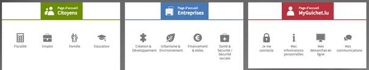Sur la page d'accueil, les pictogrammes des sections « Page d'accueil Citoyens », « Page d'accueil Entreprises » et « Page d'accueil MyGuichet.lu » ne sont pas identifiés comme image de décoration.
Sur les pages intérieures (exemple : la page citoyen), l'image <svg> à gauche du titre est une image de décoration mais n’est pas correctement identifiée.
Dans la page « Se connecter à MyGuichet.lu », l’image qui présente les dispositifs de connexion est décorative puisque le texte adjacent reprend les informations qu’elle véhicule. Cette image doit avoir une alternative vide.
Images porteuses d'information complexe
Certaines images porteuses d'informations sont complexes et nécessitent une description détaillée, pertinente, structurée et adjacente à l'image afin de permettre aux personnes ne percevant pas les images (comme les personnes aveugles), ou ayant des difficultés à les comprendre lorsqu'elles contiennent du texte (personnes ayant des difficultés de lecture, comme les dyslexiques par exemple) d'accéder à l'information.
Il sera possible e masquer cette description et de prévoir un bouton permettant à l'utilisateur de l'afficher si besoin (par exemple : « Afficher la description de l'image »). Voir un exemple de ce mécanisme. Il est également possible de proposer un lien adjacent à l'image vers la description détaillée.
Constats sur le site
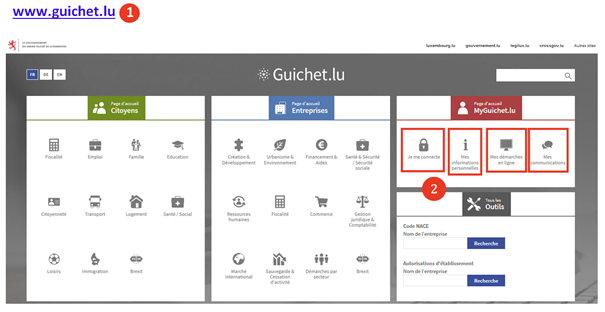Sur la page d'aide à la connexion, plusieurs images complexes (des captures d'écran) montrent une succession d'étapes. Ces images doivent disposer d’une description détaillée afin que les utilisateurs aveugles qui n’ont pas accès à cette information visuelle puissent connaître les étapes dont il est question, et les éléments d’interactions auxquels il est fait référence.
Images textes
Lorsque des images textes peuvent être reproduites en HTML et CSS, vous ne devez pas utiliser d'images.
Les textes doivent être réalisés en HTML et CSS afin de permettre aux utilisateurs qui en ont besoin d'adapter leur lisibilité (agrandissement des caractères, modification des couleurs, des polices…).
Il est également possible de conserver les images textes et de fournir à l'utilisateur un mécanisme de remplacement qui lui permet, avec un bouton par exemple, de remplacer toutes les images textes en textes stylés.
Constats sur le site
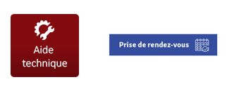Dans certaines pages, on trouve des textes en image. Par exemple sur la page « Se connecter à MyGuichet.lu », l’image « Aide technique », ou encore sur la page de contact, l’image-texte « Prise de rendez-vous ». Ces images comportent un texte qui peut être intégré directement en HTML/CSS au lieu d'être dans l'image.
Couleurs
Recommandation
Ne pas donner l'information uniquement par la couleur et utiliser des contrastes de couleurs suffisamment élevés pour les textes et les composants d'interface.
Contrastes des textes
Plusieurs couleurs présentent un rapport de contraste insuffisant, ce qui peut poser problème aux grands malvoyants et aux déficients visuels qui ont des difficultés à percevoir les couleurs ou les contrastes.
Rapports de contrastes définis par le RGAA
- Pour les textes qui ont une taille de police calculée inférieure à 24px sans effet de graisse ou une taille de police calculée inférieure à 18,5px avec effet de graisse, le rapport de contraste entre la couleur du texte (y compris le texte en image) et son arrière-plan doit être de 4.5:1, au moins.
- Pour les textes qui ont une taille de police calculée supérieure ou égale à 24px sans effet de graisse ou une taille de police calculée supérieure ou égale de 18,5px avec effet de graisse, le rapport de contraste entre la couleur du texte (y compris le texte en image) et son arrière-plan doit être de 3:1, au moins.
Vous pouvez foncer les couleurs pour obtenir le rapport de contraste exigé.
Si la charte graphique ne peut être modifiée, fournissez une méthode aux utilisateurs pour consulter le site avec des contrastes suffisants. Ceci peut être réalisé simplement avec une fonctionnalité JavaScript et une surcharge CSS des couleurs.
Vous pouvez voir un exemple de ce type de mécanisme sur le site sncf.com. Dans les réglages d'accessibilité, vous trouverez une option qui permet d'afficher le site avec des contrastes renforcés et inversés.
Constats sur le site
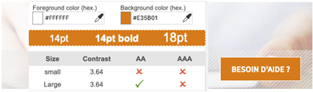Sur la page de contact, le bouton « besoin d'aide », en blanc sur fond orange, a un rapport de contraste de 3.64:1 au lieu de 4.5:1.
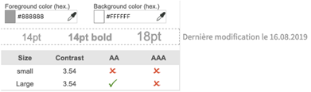Sur la page de contact, le texte « Dernière modification le 16.08.2019 », en gris sur fond blanc, a un contraste de 3.54:1 au lieu de 4.5:1.
Contraste des composants d'interface
Les composants d'interface, les illustrations porteuses d'information ou encore les mises en couleurs porteuses d'information doivent être suffisamment contrastés pour être perçus par les utilisateurs ayant des troubles de perception des couleurs. Par exemple, une icône porteuse d'information devra avoir un rapport de contraste avec la couleur de fond de 3. De même, pour un champ de saisie de formulaire, dont la zone active est matérialisée par sa bordure, alors la couleur de cette bordure devra avoir un rapport de contraste de 3 avec la couleur de fond de la page.
Constats sur le site
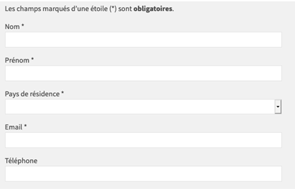Sur la page contact guichet (et l'ensemble des formulaires du site), les bordures des éléments de formulaires ne sont pas assez contrastées souvent en gris sur gris clair avec un contraste de 1.17:1 au lieu de 3:1. La couleur blanche de la zone texte a également un contraste insuffisant avec le fond gris de la page, ce qui rend ces zones interactives difficilement perceptibles par les utilisateurs malvoyants.
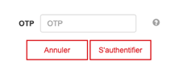Sur la page de connexion, durant les étapes de la connexion par token, les boutons d'aide « ? » en gris clair sur blanc, ont un contraste de 2.85:1 au lieu de 3:1. Ici également, les utilisateurs malvoyants auront des difficultés à percevoir la présence d’une aide à la saisie.
Information par la couleur
Lorsqu'une information est donnée par la couleur, il faut qu'elle soit également véhiculée par une autre méthode, par exemple par un texte qui donne la même information, pour être perçue par les utilisateurs aveugles.
Il faut également donner un indice visuel autre que la couleur, afin de répondre aux besoins des personnes déficientes visuelles (les daltoniens par exemple). Il peut s'agir d'un symbole, d'une texture, de chiffres.
Constats sur le site
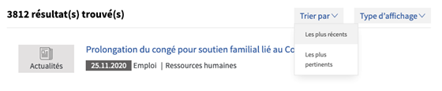Sur la page de recherche, le filtre actif n'est identifiable que par la couleur de fond (gris au lieu de blanc, ce qui se confond également avec l'état de survol). Il manque une autre indication visuelle (une puce, un souligné, etc.).
Liens
Recommandation :
Donner des intitulés de lien explicites, grâce à des informations de contexte notamment, utiliser le titre de lien le moins possible. S'assurer que le nom visible est contenu dans le nom accessible.
Liens-images
Un lien-image est un lien dont le contenu n'est composé que d'une ou plusieurs images (balises <img>). Généralement, ces liens ne posent aucun problème aux utilisateurs voyants qui parviennent à comprendre la destination du lien grâce à l'image et son contexte. En revanche, pour une personne aveugle, ces liens doivent obligatoirement posséder un intitulé.
L'intitulé d'un lien-image est généré grâce à l'alternative de l'image contenue dans ce lien.
Constats sur le site
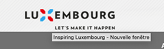Sur la page d'accueil (entre autres), le lien image « Luxembourg – Let's make it happen » possède une alternative qui ne reprend pas le texte visible.
Titres de liens (infobulles)
La restitution des titres de liens (attribut title sur une balise) dépend fortement des lecteurs d'écran et des préférences utilisateurs. Ainsi, l'utilisation de ces infobulles doit être limitée aux cas où l'infobulle apporte de l'information supplémentaire par rapport à l'intitulé du lien. De plus, cette infobulle doit reprendre au moins l'intitulé du lien pour être considéré comme conforme.
Constats sur le site

L’utilisation de l’infobulle sur les liens est quasiment systématique sur l’ensemble du site, mais très souvent cette infobulle est inutile (redondante avec l’intitulé du lien) voire non pertinente, lorsqu’elle ne reprend pas le contenu visible.
Le fait que l’infobulle ne reprenne pas l’intitulé du lien est problématique pour les utilisateurs aveugles de lecteurs d’écran qui auraient paramétré leur outil pour ne restituer que l’infobulle, ainsi ils perdraient de l’information.
Scripts
Recommandation :
Donner si nécessaire à chaque script une alternative pertinente. Rendre possible le contrôle de chaque code script au moins par le clavier et la souris et s'assurer de leur compatibilité avec les technologies d'assistance. Identifier les messages de statut lorsque c'est nécessaire.
Utilisation des boutons et des liens
Pour les aveugles et les grands malvoyants qui utilisent un lecteur d'écran, ce manque de distinction claire entre les liens et les boutons peut poser de graves problèmes.
Ainsi, un bouton implémenté sous la forme d'un lien qui déclenche une action de la page, risque de perturber l'utilisateur qui s'attendra au chargement d'une nouvelle page.
De manière générale, les liens devraient être réservés à l'affichage d'une nouvelle page ou la création de liens d'accès rapide dans le contenu. Dans tous les autres cas, l'emploi d'un bouton d'action est plus pertinent.
Enfin, chaque bouton doit avoir un nom accessible défini, soit par l'intermédiaire d'un texte (visible ou positionné hors écran) ou d'une propriété title, aria-label ou aria-labelledby.
Constats sur le site
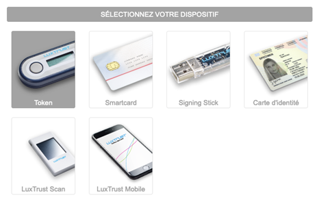Sur la page de connexion service-public, les boutons pour choisir son dispositif de connexion ne sont pas des éléments <button>.
Sur la page de connexion service-public, les boutons d'aide « ? » dans les différentes étapes de connexion par token n'ont aucun intitulé. Il s’agit d’une problématique majeure puisqu’un utilisateur aveugle ne peut pas savoir à quoi servent ces boutons et donc dans le doute, il n’activera jamais ces boutons.
Éléments interactifs inaccessibles au clavier
Constats sur le site
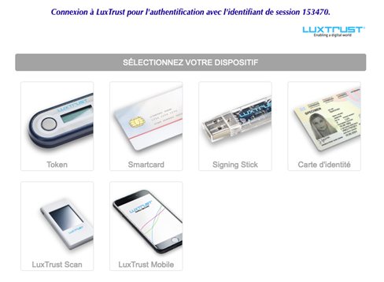Sur la page de connexion service-public, le service de connexion via LuxTrust n'est pas accessible au clavier. Il est impossible de sélectionner son dispositif de connexion au clavier.
Carrousels
Constats sur le site
Sur la page d'accueil, le carrousel des actualités ne respecte pas le modèle de conception des carrousels, notamment on relève une problématique de navigation au clavier : une actualité non visible peut recevoir le focus par la tabulation, un utilisateur voyant qui navigue au clavier ne peut plus se repérer dans le site.
Fenêtres modales
Constats sur le site
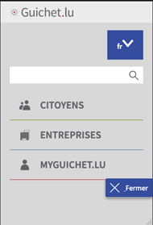Sur les pages intérieures (par exemple la page de contact), la navigation responsive (sur mobile ou quand on zoome) se présente comme une
fenêtre modale mais ne respecte pas le modèle de conception ARIA Dialog associé : on ne peut la quitter avec la touche ESC et le focus par tabulation peut sortir de la zone visible pour rejoindre les contenus en arrière-plan (visuellement cachés).
Système d’onglets
Constats sur le site

Sur la page fiscalité, le motif de conception ARIA tabs n'est que partiellement implémenté. Les onglets doivent se trouver avant leur contenu dans le code et la navigation via les flèches directionnelles doit être supportée.
Message de statut
Constats sur le site
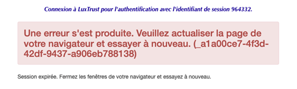Sur la page de connexion service-public (via token), l'iFrame LuxTrust peut afficher une erreur en cas d'expiration de la session. Ce message est inséré dynamiquement en haut de la page. Un utilisateur aveugle ou un utilisateur de loupe d’écran qui n’a pas une vision globale de la page n’aura pas conscience de l’apparition de ce message et n’accédera donc pas à l’information.
Éléments obligatoires
Recommandation
Vérifier que chaque page web a un code valide selon le type de document, un titre pertinent et une indication de langue par défaut. Vérifier que les balises ne sont pas utilisées uniquement à des fins de présentation, que les changements de langues et de direction de sens de lecture sont indiqués.
Titre de la page
Le titre de la page (visible dans l'onglet du navigateur) est un élément de repère dans le site web. Pour les utilisateurs de lecteur d'écran (utilisateurs aveugles ou grands malvoyants), c'est le premier élément restitué par le lecteur d'écran au chargement de la page. Cela permet de donner du contexte aux utilisateurs qui n'ont pas une vision globale de la page. Pour les utilisateurs avec des troubles de la mémoire, c'est l'information à laquelle ils accèdent lorsqu'ils naviguent avec l'historique de navigation du navigateur. Il est donc essentiel d'avoir des titres de pages pertinents, concis et très souvent uniques dans le site, et qui reflètent de la position de l'utilisateur dans le site web.
Il est des cas particuliers, comme les pages dont le contenu est une liste de résultats paginés (ex. : les résultats de recherche), pour lesquels le titre doit refléter la nature de la recherche ainsi que le numéro de page en cours de consultation.
Constats sur le site
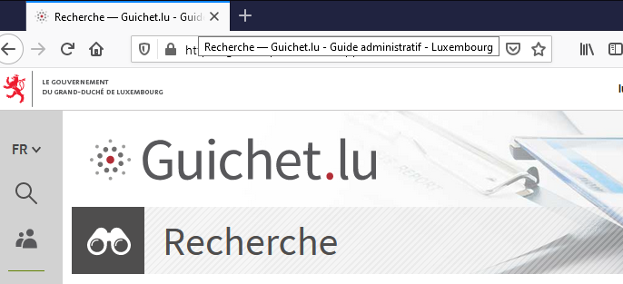Dans la page de recherche, le titre de la page ne reprend pas les termes recherchés ni les filtres appliqués et la pagination. On retrouve une problématique similaire dans la page Actualités : le titre ne reprend pas les filtres d’actualités activés.
Indication de langue
Les lecteurs d'écran utilisent les indications de langue pour vocaliser le contenu dans la langue définie. La page doit contenir une définition de langue principale (généralement sur l'élément html).
Ensuite, les éléments de langue étrangère présente dans le contenu doivent être signalés. Si dans la page on trouve, des termes absents du dictionnaire de la langue principale de la page, il faut les identifier afin que le lecteur d'écran restitue dans la langue appropriée. En effet, une mauvaise prononciation pourrait mener à des incompréhensions pour les utilisateurs qui reposent uniquement sur des restitutions orales. Les noms propres sont exclus de cette obligation.
Constats sur le site
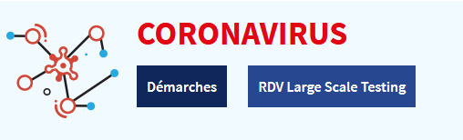Dans le bandeau « Coronavirus », « Large Scale Testing >» est un terme anglais mais aucun changement de langue n’est identifié.
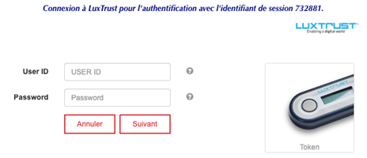Sur la page de connexion service-public (à l'étape 1 de la connexion par token), les labels « User ID » et « Password >» ne sont pas signalés comme étant en anglais.
Balises utilisées à des fins de présentation
Les éléments de structure HTML ont chacun une sémantique particulière (paragraphe, titre, image, lien, etc.). Si les éléments sont mal employés (détournés de leur utilité première), cela peut poser des problèmes aux utilisateurs qui naviguent à l'aide d'une technologie d'assistance (lecteur d'écran, plug-in…). En effet, les technologies d'assistance mettent des raccourcis à disposition permettant de naviguer rapidement entre certains types d'éléments (paragraphes, titres, listes, etc.). Si ces éléments sont mal employés, les utilisateurs ne peuvent pas utiliser ces fonctionnalités de repère et de navigation dans le contenu.
Constats sur le site
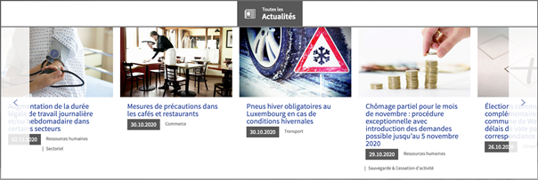Sur la page d'accueil, dans les actualités, la structure <figure& / figcaption> n'est pas adaptée. L'image est purement décorative et le contenu texte n'en est pas la légende mais l'extrait de l'article.
Sur la page contact, dans l'encart « Protection des données », du texte est directement dans un élément <div> (« Les informations qui vous concernent… à bien votre demande. ») et un élément <p> vide est utilisé pour créer un espace.
Structuration de l'information
Recommandation
Utiliser des titres, des listes, des abréviations et des citations pour structurer l'information. S'assurer que la structure du document est cohérente.
Listes
La structuration en listes permet aux utilisateurs de lecteurs d'écran de consulter plus rapidement le contenu, grâce à des raccourcis spécifiques, et d'accéder directement à une liste ou de la passer sans avoir à en parcourir tous les items.
Constats sur le site

La liste des liens de la section « Coronavirus » n’est pas structurée avec les éléments de liste appropriés.
Structure du document
L'utilisation correcte des balises HTML5 et des landmarks ARIA va permettre d'enrichir la restitution pour les utilisateurs aveugles qui ne perçoivent pas les mises en forme : la navigation principale ne sera plus perçue simplement comme une liste de liens, elle sera restituée à l'utilisateur comme un élément de navigation, par l'intermédiaire du lecteur d'écran qui annoncera « région » ou « repère ».
De plus, ces marqueurs sémantiques vont également constituer des éléments de navigation rapide dans la page. Grâce à un raccourci clavier, certains utilisateurs vont pouvoir naviguer plus rapidement entre les régions qui auront été ainsi identifiées.
Constats sur le site
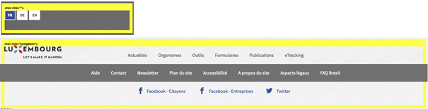Sur la page d'accueil, des balises <nav> sont utilisées pour le sélecteur de langue et les liens d'accès rapide du pied de page, mais ces éléments ne sont pas considérés comme des éléments de navigation dans le site.
Sur la page de connexion service-public, dans l'iFrame LuxTrust, une balise <nav role="navigation"> ne contient qu'une image sans lien. Cet élément ne constitue pas une navigation dans le site et ne devrait donc pas être identifié comme tel.
Présentation de l'information
Recommandation
Utiliser des feuilles de styles pour contrôler la présentation de l'information. Vérifier l'effet de l'agrandissement des tailles des caractères sur la lisibilité. S'assurer que les liens sont correctement identifiables, que la prise de focus est signalée, que l'interlignage est suffisant et donner la possibilité à l'utilisateur de contrôler la justification des textes. S'assurer que les textes cachés sont correctement restitués et que l'information n'est pas donnée uniquement par la forme ou la position d'un élément. S'assurer que les contenus sont lisibles et utilisables dans une fenêtre de largeur réduite. Veiller à ce que l'application de paramètres typographiques n'entraîne pas la perte de contenu ou de fonctionnalité. S'assurer que les contenus qui apparaissent au survol et à la prise de focus puissent être contrôlés par l'utilisateur.
Agrandissement des tailles de texte
Certaines personnes déficientes visuelles, également des personnes ayant des difficultés de lecture comme les personnes dyslexiques, ont besoin d'adapter la taille du texte à l'écran.
L'agrandissement des caractères ne doit pas provoquer de perte d'informations. À 200%, le contenu doit rester lisible et compréhensible, toutes les informations doivent rester présentes.
Il existe plusieurs méthodes pour contrôler l'agrandissement des caractères :
- La fonction d'agrandissement du texte du navigateur (le zoom texte) ;
- Les fonctions de zoom graphique du navigateur ;
- Un composant d'interface propre au site permettant d'agrandir le texte ou de zoomer.
Constats sur le site
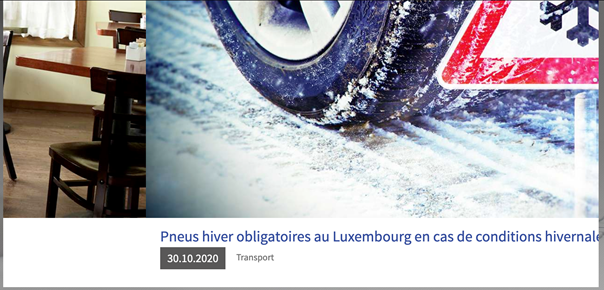Sur la page d'accueil, lorsqu’on applique un zoom à 200%, le carrousel des actualités n'est plus fonctionnel : la navigation n'est plus visible, les textes sont coupés et on ne peut pas naviguer à travers les actualités.
Liens dont la nature n'est pas évidente
Un lien dont la nature n'est pas évidente est un lien qui peut être confondu avec un texte normal lorsqu'il est signalé uniquement par la couleur par certains utilisateurs ne percevant pas ou mal les couleurs.
Les personnes déficientes visuelles peuvent ignorer ces liens puisque ceux-ci ne sont pas visuellement discernables du reste du texte dans lequel ils sont insérés.
Constats sur le site
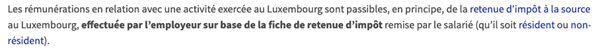Dans les pages de contenus (par exemple la page fiscalité), les liens (en bleu) à l'intérieur des textes (en gris foncé) sont signalés uniquement par la couleur (aucune forme ne permet de les distinguer). Ils n'ont pas un contraste suffisant : il est de 1.01 au lieu de 3 requis, qui permettrait aux utilisateurs ayant des troubles de la perception des couleurs de pouvoir percevoir ces liens.
Largeur réduite
Il s'agit ici de tester la capacité des contenus à se réorganiser lorsqu'un utilisateur malvoyant doit réaliser un zoom graphique de 400%. À ce titre, on teste la lisibilité des contenus dans une fenêtre de largeur réduite à 320px.
On s'assure que l'utilisateur a accès à tous les contenus et que tous les contenus sont lisibles sans avoir recours à la barre de défilement horizontale.
Constats sur le site
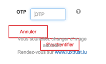Sur la page de connexion, dans l'iFrame LuxTrust, à l'étape 2 de la connexion par token, la vue responsive entraîne un chevauchement des boutons et du texte.
Formulaires
Recommandation :
Associer pour chaque formulaire chacun de ses champs à son étiquette, grouper les champs dans des blocs d'informations de même nature, regrouper les items de même nature dans les listes de choix, donner à chaque bouton un intitulé explicite. Vérifier la présence d'aide à la saisie, s'assurer que le contrôle de saisie est accessible et que l'utilisateur peut contrôler les données à caractère financier, juridique ou personnel.
Étiquettes et champs
Les champs de formulaires doivent tous posséder des étiquettes correctement reliées.
Une étiquette de champ est un texte situé à proximité du champ de formulaire qui permet de connaître la nature, le type ou le format des informations attendues.
De cette manière, lorsqu'un utilisateur entre dans le champ de saisie avec un lecteur d'écran, le lecteur d'écran lit le contenu de l'étiquette. L'utilisateur comprend alors ce qu'il doit saisir.
Sans cela, même si une étiquette est présente visuellement, l'utilisateur entendra « champ de saisie vide » en entrant dans le champ et ne saura donc pas quoi saisir.
Constats sur le site
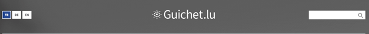Dans l'en-tête, le champ de recherche n'a pas d'intitulé visible. L'attribut title="Rechercher sur le site" par exemple doit être présent.
Intitulés de bouton pertinents
Les boutons qui permettent d'interagir avec les formulaires doivent avoir des intitulés pertinents pour que l'utilisateur comprenne l'action du bouton.
Ces intitulés sont essentiels pour les personnes aveugles, afin qu'elles soient sûres de l'action qu'elles s'apprêtent à réaliser.
Constats sur le site
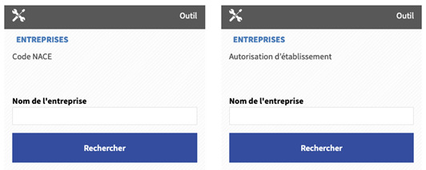Sur la page outils, les boutons « Rechercher » n'ont pas un intitulé pertinent : l'objet de la recherche n'est pas précisé. L'attribut title="Recherche un code NACE" par exemple, rendrait le bouton plus explicite.
Contrôle de saisie et aide à la saisie
Les messages d'erreur de saisie des champs de formulaire doivent être liés correctement aux champs en erreur.
Vérifier que pour chaque message d'erreur la méthode suivante est utilisée.
Constats sur le site
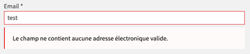Sur la page contact, le champ email attend un format particulier.
D’une part, ce format n’est pas spécifié à l’utilisateur avant qu’il ne commette une erreur. Une aide sur le modèle « nomprenom@domain.com » devrait être insérée dans l’étiquette du champ, pour informer les utilisateurs du format attendu.
D’autre part, le message d'erreur en cas de non-respect du format de l'e-mail apporte pas d’aide supplémentaire : « Le champ ne contient aucune adresse électronique valide ». Ce message d’erreur devrait contenir un exemple réel de saisie comme « philippe@myguichet.lu »
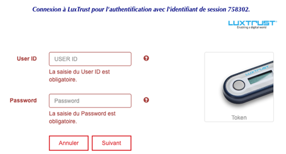Sur la page de connexion, à chaque étape de la connexion par token, les champs requis ne sont pas signalés.
De plus, en cas d'erreur, le message qui apparaît sous le champ n'est pas correctement relié au champ, un utilisateur aveugle pourra ne jamais accéder à ce message d’information.
Enfin, le message d'erreur ne comporte jamais d'exemple concret de saisie (utile pour user ID qui attend un format particulier) et le focus n'est pas remis sur le premier champ en erreur du formulaire.
Navigation
Recommandation :
Faciliter la navigation dans un ensemble de pages par au moins deux systèmes de navigation différents (menu de navigation, plan du site ou moteur de recherche), un fil d'Ariane et l'indication de la page active dans le menu de navigation. Identifier les groupes de liens importants et la zone de contenu et donner la possibilité de les éviter par des liens de navigation interne. S'assurer que l'ordre de tabulation est cohérent et que la page ne comporte pas de piège au clavier. S'assurer que les raccourcis clavier qui utilisent une seule touche sont contrôlables par l'utilisateur.
Landmarks ARIA
Pour fournir des points de repère aux utilisateurs aveugles, il faudra également implémenter les landmarks ARIA sur les balises HTML 5 de la page.
Constats sur le site
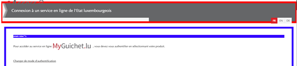Sur la page de connexion, les éléments header, main et footer n'ont pas d'attribut role.
Consultation
Recommandation
Vérifier que l'utilisateur a le contrôle des procédés de rafraîchissement, des changements brusques de luminosité, des ouvertures de nouvelles fenêtres et des contenus en mouvement ou clignotants. Ne pas faire dépendre l'accomplissement d'une tâche d'une limite de temps sauf si elle est essentielle et s'assurer que les données saisies sont récupérées après une interruption de session authentifiée. Proposer des versions accessibles ou rendre accessibles les documents en téléchargement. S'assurer que la consultation n'est pas dépendante de l'orientation de l'écran. Toujours proposer un geste simple en alternative d'un geste complexe permettant de réaliser une action.
Documents en téléchargement
Assurez-vous que chaque document soit accessible (cf. les Guides de créations de documents bureautiques accessibles), ou qu'il dispose d'une alternative accessible proposant le même contenu (par exemple, une version HTML correctement structurée).
Constats sur le site
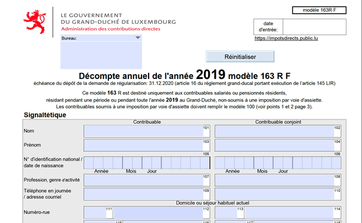
Sur la page fiscalité, plusieurs documents téléchargeables au format PDF ne sont pas accessibles (pas de structuration des contenus notamment).